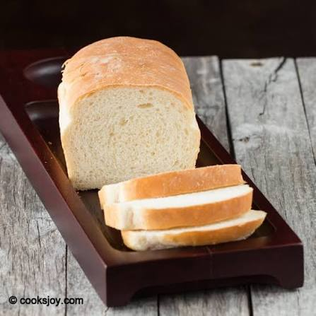

Bread

Description
Bread is one of the oldest and most important foods in the world. At its core, it’s made from flour, water, and a leavening agent, but from that simple combination comes an incredible range of textures and flavours. Across cultures, bread is more than just food; it’s a staple, a symbol of nourishment, and something deeply woven into daily life. It can be soft or crusty, light or dense, eaten on its own or used to carry other foods.
Plain bread is bread in its purest form. No fillings, no sweeteners, no added flavours—just the basics doing their job. Because of that simplicity, plain bread relies heavily on good technique: proper kneading to develop structure, correct fermentation for flavour and rise, and careful baking to get the right crust and crumb. When it’s well made, plain bread has a mild, comforting taste and a satisfying texture that doesn’t overwhelm the palate.
Ingredients
- Warm water: (105-115 degrees)- to activate the yeast.
- Active Dry yeast: Instant or rapid rise yeast can be substituted, following my adaption notes in the recipe card.
- Granulated sugar or honey: the sugar is used to “feed” the yeast and tenderize the bread.
- Salt: to enhance flavor
- Oil: Vegetable or canola oil, or melted butter could be substituted
- Flour: Bread Flour or All-Purpose Flour can both be used with no changes to the recipe.
Steps
- Proof the yeast: In a large bowl or stand mixer add the yeast, water and a pinch of the sugar or honey. Allow to rest for 5-10 minutes until foaming and bubbly. (This is called “proofing” the yeast, to make sure it is active. If it doesn’t foam, the yeast is no good, and you need to start over with fresh yeast).
- Prepare the dough: Add remaining sugar or honey, salt, oil, and 3 cups of flour. Mix to combine. Add another cup of flour and mix to combine. With the mixer running add more flour, ½ cup at a time, until the dough begins to pull away from the sides of the bowl.
- Knead the dough: Mix the dough for 5 minutes on medium speed (or knead with your hands on a lightly floured surface, for 5-8 minutes). The dough should be smooth and elastic, and slightly stick to a clean finger, but not be overly sticky.
- First Rise: Grease a large bowl with oil or cooking spray and place the dough inside. Cover with a dish towel or plastic wrap and allow to rise in a warm place* until doubled in size (about 1 ½ hours).
- Punch the dough down really well to remove air bubbles.
- Divide into two equal portions. Shape each ball into long logs and place into greased loaf pans.
- Second rise: Spray two pieces of plastic wrap with cooking spray and lay them gently over the pans. Allow dough to rise again for about 45 minutes to one hour, or until risen 1 inch above the loaf pans.
- Bake: Adjust oven racks to lower/middle position. Preheat the oven to 350 F. Bake bread for about 30-33 minutes, or until golden brown on top. Give the top of a loaf a gentle tap; it should sound hollow.
- Invert the baked loaves onto a wire cooling rack. Brush the tops with butter and allow to cool for at least 15 minutes before slicing.
Storing: Once cool, store bread in an airtight container or bag for 2-3 days at room temperature, or up to 5 days in the refrigerator.
Click this link to go to our Home page